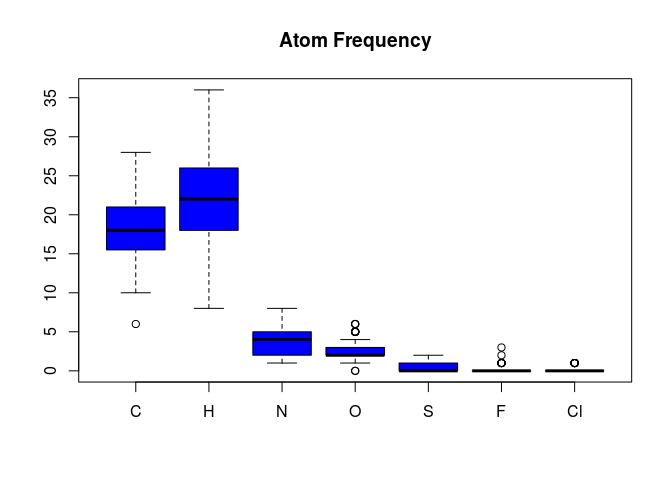

Several methods and functions are available to compute basic compound
descriptors, such as molecular formula (MF), molecular weight (MW), and
frequencies of atoms and functional groups. In many of these functions,
it is important to set addH=TRUE in order to
include/add hydrogens that are often not specified in an SD file.
propma <- atomcountMA(sdfset, addH=FALSE)
boxplot(propma, col="blue", main="Atom Frequency")

boxplot(rowSums(propma), main="All Atom Frequency")
Data frame provided by library containing atom names, atom symbols,
standard atomic weights, group and period numbers:
data(atomprop)
atomprop[1:4,]
## Number Name Symbol Atomic_weight Group Period
## 1 1 hydrogen H 1.007940 1 1
## 2 2 helium He 4.002602 18 1
## 3 3 lithium Li 6.941000 1 2
## 4 4 beryllium Be 9.012182 2 2
Compute MW and formula:
MW(sdfset[1:4], addH=FALSE)
## CMP1 CMP2 CMP3 CMP4
## 456.4916 357.4069 370.4255 461.5346
MF(sdfset[1:4], addH=FALSE)
## CMP1 CMP2 CMP3 CMP4
## "C23H28N4O6" "C18H23N5O3" "C18H18N4O3S" "C21H27N5O5S"
Enumerate functional groups:
groups(sdfset[1:4], groups="fctgroup", type="countMA")
## RNH2 R2NH R3N ROPO3 ROH RCHO RCOR RCOOH RCOOR ROR RCCH RCN
## CMP1 0 2 1 0 0 0 0 0 0 2 0 0
## CMP2 0 2 2 0 1 0 0 0 0 0 0 0
## CMP3 0 1 1 0 1 0 1 0 0 0 0 0
## CMP4 0 1 3 0 0 0 0 0 0 2 0 0
Combine MW, MF, charges, atom counts, functional group counts and ring
counts in one data frame:
propma <- data.frame(MF=MF(sdfset, addH=FALSE), MW=MW(sdfset, addH=FALSE),
Ncharges=sapply(bonds(sdfset, type="charge"), length),
atomcountMA(sdfset, addH=FALSE),
groups(sdfset, type="countMA"),
rings(sdfset, upper=6, type="count", arom=TRUE))
propma[1:4,]
## MF MW Ncharges C H N O S F Cl RNH2 R2NH R3N ROPO3 ROH RCHO RCOR RCOOH RCOOR
## CMP1 C23H28N4O6 456.4916 0 23 28 4 6 0 0 0 0 2 1 0 0 0 0 0 0
## CMP2 C18H23N5O3 357.4069 0 18 23 5 3 0 0 0 0 2 2 0 1 0 0 0 0
## CMP3 C18H18N4O3S 370.4255 0 18 18 4 3 1 0 0 0 1 1 0 1 0 1 0 0
## CMP4 C21H27N5O5S 461.5346 0 21 27 5 5 1 0 0 0 1 3 0 0 0 0 0 0
## ROR RCCH RCN RINGS AROMATIC
## CMP1 2 0 0 4 2
## CMP2 0 0 0 3 3
## CMP3 0 0 0 4 2
## CMP4 2 0 0 3 3
The following shows an example for assigning the values stored in a
matrix (e.g. property descriptors) to the data block components in an
SDFset. Each matrix row will be assigned to the
corresponding slot position in the SDFset.
datablock(sdfset) <- propma # Works with all SDF components
datablock(sdfset)[1:4]
test <- apply(propma[1:4,], 1, function(x)
data.frame(col=colnames(propma), value=x))
The data blocks in SDFs contain often important annotation information
about compounds. The datablock2ma function returns this
information as matrix for all compounds stored in an
SDFset container. The splitNumChar
function can then be used to organize all numeric columns in a
numeric matrix and the character columns in a
character matrix as components of a
list object.
datablocktag(sdfset, tag="PUBCHEM_NIST_INCHI")
datablocktag(sdfset,
tag="PUBCHEM_OPENEYE_CAN_SMILES")
Convert entire data block to matrix:
blockmatrix <- datablock2ma(datablocklist=datablock(sdfset)) # Converts data block to matrix
numchar <- splitNumChar(blockmatrix=blockmatrix) # Splits matrix to numeric matrix and character matrix
numchar[[1]][1:4,]; numchar[[2]][1:4,]
# Splits matrix to numeric matrix and character matrix